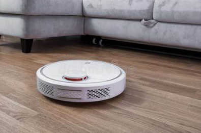

v.
Agents
Agent
An
Different Types of Agent
- Human agent: eyes, ears, nose, skin as sensors, and other organs such as hands, legs, mouth as effectors.
- Robotic agent: cameras and infrared range finders as sensors, and various motors as effectors.
- Software agent: encoded big strings as its programs and actions, e.g. spell checker.
Agents Terminology
- Performance Measure: how successful an agent is, or how well the agent fits the goal (
goal ⇢ an environment state or a set of states) - Percept: agent's perceptual inputs at a given instance
(percept sequence ⇢ the history of all that an agent has perceived till data) - Behaviour: agent's action after any given sequence of percepts
- Function: a map from the percept sequence to an action
P.E.A.S.
For each example of an agent, what are the:Performance measures, Environment, Actuators, and Sensors?
PEAS - ChatBot
Performance
Customer assistance?
Pass Turing Test?
Customer assistance?
Pass Turing Test?
Environment
Instant messaging app
Other interactive environment
Instant messaging app
Other interactive environment
Actuators
Output messages
Provide responses
Output messages
Provide responses
Sensors
Read messages
Listen voice input
Read messages
Listen voice input
PEAS - Chess AI
Performance
Win the game
Win the game
Environment
Chess board
Chess board

Actuators
Move a piece
Move a piece
Sensors
Game status
Game status
PEAS - Robot Vacuum
Performance
Room cleanness
Room cleanness
Environment
The room it is in

The room it is in
Actuators
Motors
Vacuum unit
Motors
Vacuum unit
Sensors
Dirt sensor, Bin level sensor
infrared sensor for obstacles
Battery level sensor, ...
Dirt sensor, Bin level sensor
infrared sensor for obstacles
Battery level sensor, ...
PEAS - Autopilot AI
Performance
Arrive destination safely
Arrive destination safely
Environment
Road traffics
Road traffics
Actuators
Motors
Steering
Accelerator
Break
Motors
Steering
Accelerator
Break
Sensors
Infrared, GPS
Cameras, radar, lidar, ...
Infrared, GPS
Cameras, radar, lidar, ...
PEAS - Game AI
Performance
Kill enemies?
Assist teammates?
Kill enemies?
Assist teammates?
Environment
Game world
Game world
Actuators
Character controllers.Move()
Shooting
Talk, animations, ...
Character controllers.Move()
Shooting
Talk, animations, ...
Sensors
Raycast
Player/NPC positions
Scene geometry
Raycast
Player/NPC positions
Scene geometry
PEAS - Human
Performance
???
???
Environment
Real world
Real world
Actuators
All sorts of muscle controls
Hands, legs, feet, mouth, ...
All sorts of muscle controls
Hands, legs, feet, mouth, ...
Sensors
Eyes, ears, nose, tongue, skin
Eyes, ears, nose, tongue, skin
Environment
- Environment comes with many different properties
- These properties influence the choice of AI architecture we use to build agents
Observability
- Fully observable: the agent's sensors give it full information about the state of the environment
- Partially observable: some aspects of the environment state are not visible to the agent's sensors
- E.g.: a chess game is fully observable, a poker game is partially observable
Number of Agents
- Single agent: agent is the only on in the environment
- Multi-agent: there is more than one agent
- Cooperative: all agents share the same performance measure
- Competitive: agents performance measures are in opposition to each other (i.e. if one agent "wins", another "loses")
Determinism
- Deterministic: the next state of the environment is completely determined by the current state and by the agent's action
- Stochastic: there is some aspect of randomness in determining the next state of the environment
- E.g.: Chess is deterministic; any board game involving dice rolls or random card draws is stochastic
Dynamicity
- Static: the environment does not change while the agent is deliberating
- Dynamic: the environment changes constantly
- E.g.: most board games are static while most (non turn-based) video games are dynamic
Discreteness
- Discrete: time, percepts, and actions are all discrete (from a finite set of possibilities or "integer values")
- Continuous: at least one of these is not discrete ("float values")
- Continuous problems are hard so we sometimes discretise them
Known or Unknown
- Are all the details of the environment known to the AI designer?
- For a game or simulation: probably yes (unless someone else made it and we don't have the source code)
- For the real world: technically no (but we have physics, sociology, economics, etc to give us good approximations)
Agents and AI
- The ideas of agents and environments are a useful frame for designing AI
- All(?) AI problems can be expressed in terms of
creating an agent that optimises some performance measure in some environment
- Agent design boils down to: given a percept (and possibly some memory of past percepts/actions), choose the best action to take now
Rule-based AI
Rule-based AI
- Generally reactive to the state of the world
- Based on
if-thentriggers, basic calculations, etc. - Generally hand-coded and only modifiable by a programmer
Case Study: Ghosts in Pac-Man
- Full details: http://gameinternals.com/understanding-pac-man-ghost-behavior
- Each ghost has 3 states
- Chase: head for a specific position
- Scatter: head for a specific corner
- Frightened: move randomly
Ghost "personalities"
- Red ghost: aim for Pac-Man
- Pink ghost: aim for 2 spaces ahead of Pac-Man
- Blue ghost: aim for position on the line between red ghost and 2 spaces ahead of Pac-Man
- Orange ghost: aim for Pac-Man until 8 spaces away, then aim for corner
Ghost Movement
- No pathfinding - greedily move towards target
- Can only change direction at an intersection
- Cannot reverse or stay still
- Therefore cannot get stuck, despite imperfect pathfinding
PAC-MAN Example
Ghost Behaviour
- Behaviour rules are very simple
- However, the combination of them leads to interesting gameplay and illusion of personality
Design Lessons
- AI doesn't have to be complicated
- Simple AI, when interacting with a player and each other, can give engaging results
- Bugs in AI don't alway matter ...
Finite State Machines
Finite State Machines (FSM)
- A FSM consists of:
- A set of states, and
- Transitions between states
- At any given time, the FSM is in a single state
- Inputs or events (percepts) can cause the FSM to transition to a different state
- Which state the FSM is in dictates what actions the agent takes
State Transition Diagrams

- FSMs are often drawn as state transition diagrams
- Similar to flowcharts and certain types of UML diagram
Other Uses of FSMs
As well as AI behaviours, FSMs may also be used for:
- Animation
- UI menu systems
- Dialogue trees
- Token parsing
- ...
Implementing FSMs
- Implementation needs to keep track of current state and execute some code dependent on the state (the code may change the current state)
- Most common approach: a big
switch-casestatement, with anenumtype for the state - Object-oriented approach: a
Stateclass, which your FSM states inherit from - Functional approach: represent state by a function delegate
- Coroutine approach: encode your FSM logic as a procedure which runs as a coroutine (requires either refactoring logic into structured loops or using
goto)
Hierarchical FSMs
- An FSM with
Nstates has potentiallyN2transitions - Designing complex behaviour with FSMs quickly gets unwieldy
- Hierarchical FSMs allow to group states into super-states to simplify defining transitions
Should you use FSMs?
- FSMs are useful for designing simple AI behaviours
- Historically an important technique for game AI
- However, other techniques such as behaviour trees are more flexible and better suited to designing complex behaviours
Behaviour Trees
Behaviour Trees (BTs)
- A hierarchical model of decision making
- Allow complex behaviours to be built up from simple components
- Allow for more complex behaviours than FSMs
- First used in Halo 2 (2005), now used extensively
- Also used in robotics and other non-game AI applications
Using BTs
- Fairly "easy" to implement; plenty of resources online
- Unreal: an advanced BT system is built it
- Unity: numerous free and paid options on the Asset Store e.g. Behavior Machine, Behavior Designer, Behave, RAIN
BT Basics
- A BT is a tree of nodes
- On each game update (i.e. each frame), the root node is ticked
- When a node is ticked, it might cause some or all of its children to tick as well
- So ticks propagate down the tree from the root
- A ticked node returns one of three statuses:
- Success
- Running
- Failure
- "Running" status allows nodes to represent operations that last multiple frames
Blackboard
- It is often useful to share data between nodes
- A blackboard (sometimes called a data context) allows this
- Blackboard defines variables, which can be read and written by nodes
- Blackboard can be local to the AI agent, shared between several agents, or global to all agents
- Note: shared blackboards mean that your AI has "telepathy" - this may or may not be desirable!
BTs in The Division
https://www.gdcvault.com/play/1023382/
AI Behavior Editing and Debugging in "Tom Clancy's The Division"
Workshop
Rule-based AI
PAC-MAN Game
Performance
Score as much as you can
Score as much as you can
Environment
Game board
Game board
Actuators
Move (left/right/up/down)
Move (left/right/up/down)
Sensors
The map
Ghosts, dots
The map
Ghosts, dots
Simple vs. Complex Rules
- Try to increase the complexity of the game gradually
- Think carefully while defining new rules for ghosts
- Implement different behaviours for ghosts
- Pure Python + 3rd party libs
Questions?

Email:
Flowchart Example
%%{init: {'theme': 'dark', 'themeVariables': { 'darkMode': true }}}%%
flowchart LR
Selector --> A
Selector --> B
Selector --> Sequence
Sequence --> C
Sequence --> D